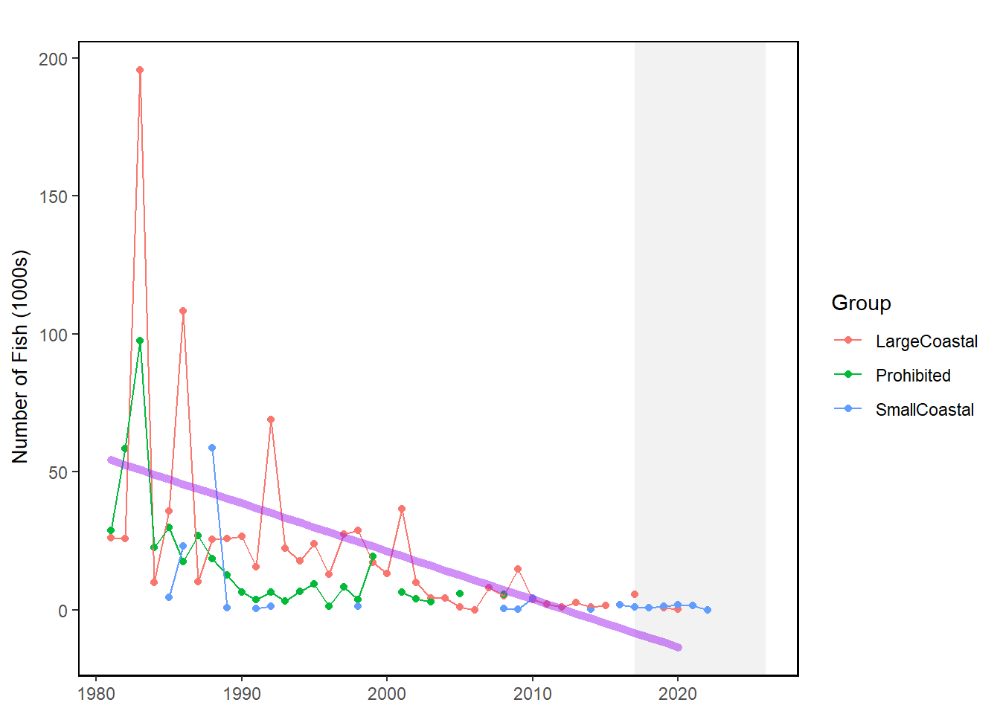
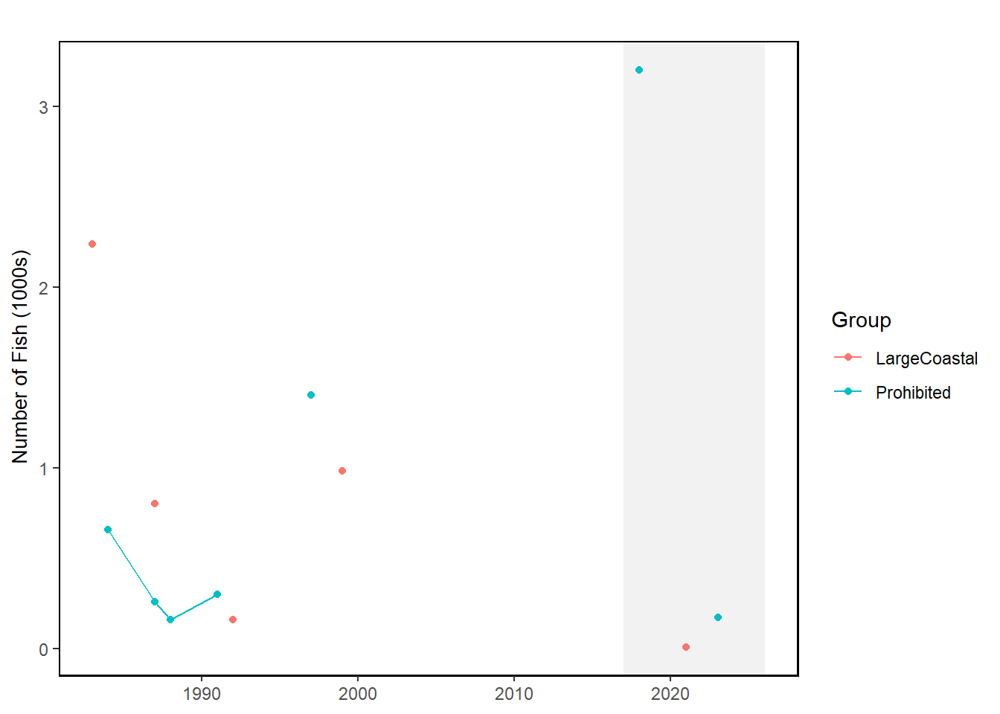

74 Recreational HMS
Last updated July 23, 2026
Description: Recreational shark landings estimates by management group (large coastal, small coastal, prohibited, pelagic) in numbers of sharks (x1000) by year.
Contributor(s): Jennifer Cudney (OSF/HMS), Cliff Hutt (OSF/HMS)
Affiliations: NEFSC
Indicator Family:
Indicator Category:
Synthesis Theme:
74.1 Introduction to Indicator
These indicators track HMS recreational landings estimates for four management groups of sharks. Data come from two sources - MRIP (large coastal, small coastal, and prohibited sharks) and LPS (pelagic sharks). These data are extrapolated estimates of catch based on average catch rates calculated from program survey data and estimates of total fishing effort.
MRIP was initiated in 2008 as a state-regional-federal partnership that develops, implements and continuously improves a national network of recreational fishing surveys to estimate total marine recreational catch in the United States.
LPS, which began in 2001, collects information regarding the recreational fishery directed at large pelagic species (e.g., tunas, billfishes, swordfish, sharks, wahoo, dolphinfish, amberjack) in the offshore waters from Maine through Virginia from June through October. The purpose of LPS is to collect more precise estimates of fishing effort and catch for large pelagic species that are rarely encountered in the general MRIP surveys.
74.2 Key Results and Visualizations
Graphs plot the estimated number of shark landings by year. Due to the large range of landings and outliers across the time series, the estimated number of sharks landed are scaled and depicted as the number of landings (1000s). For example, in 1983 the estimated number of large coastal sharks landed was 195.498. When scaled up by 1000, the estimated number of large coastal sharks landed is 195,498. Recreational shark landings from MRIP are graphed separately from pelagic shark landings, which are from the LPS. Gray boxes highlight the last 10 years of data, and linear trend lines are provided.
Mid-Atlantic

New England

74.3 Implications
The number of recreationally landed large coastal sharks has declined since recreational fisheries surveys have been initiated. Decreases in landings of the prohibited shark species group, which was established in the FMP in 1997, are to be expected as retention bans on popular species were enforced (i.e., high landings early in the time series dropped off through the late 1990s). A recent peak in 2018 of New England prohibited shark landings was driven by an unusually high landings estimate for sand tiger sharks; otherwise there have been little to no landings for prohibited sharks in recent years. Additional species have been added through time to the prohibited shark management unit, including dusky shark and oceanic whitetip. Minimal landings of small coastal sharks are not surprising, as most of these species are distributed south of the Northeast and Mid-Atlantic sample frame analyzed for this report. Pelagic shark landings (LPS) are largely driven by fishing for shortfin mako through time, however retention bans were implemented in 2018 to comply with ICCAT recommendations.
74.4 Indicator statistics
Spatial scale: “Northeast”, “New England, or “NE” is data collected by Marine Recreational Information Program (MRIP) or Large Pelagic Survey (LPS) samplers from Maine to Connecticut. “MidAtlantic” or “MAB” is data collected by MRIP or LPS samplers from New York to Virginia.
Temporal scale: MRIP sampling is year-round. LPS Sampling is conducted from June through October.
Variable definitions
74.5 Get the data
Point of contact: Jennifer Cudney (jennifer.cudney@noaa.gov)
ecodata dataset: ecodata::rec_hms
Tech Doc link: https://noaa-edab.github.io/tech-doc/rec_hms.html